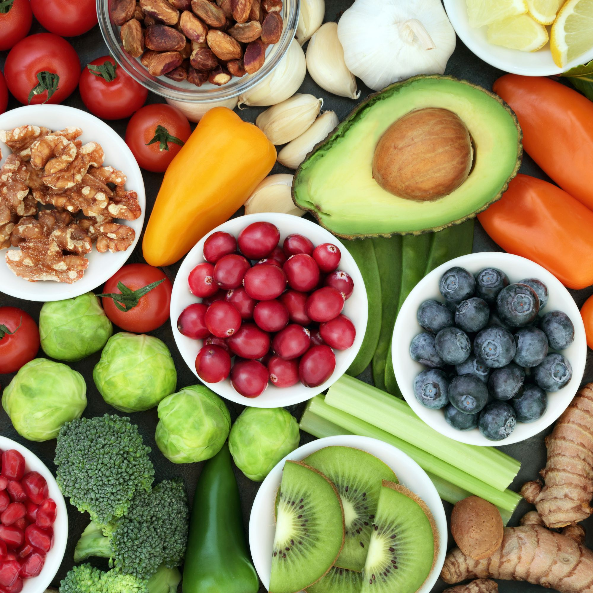
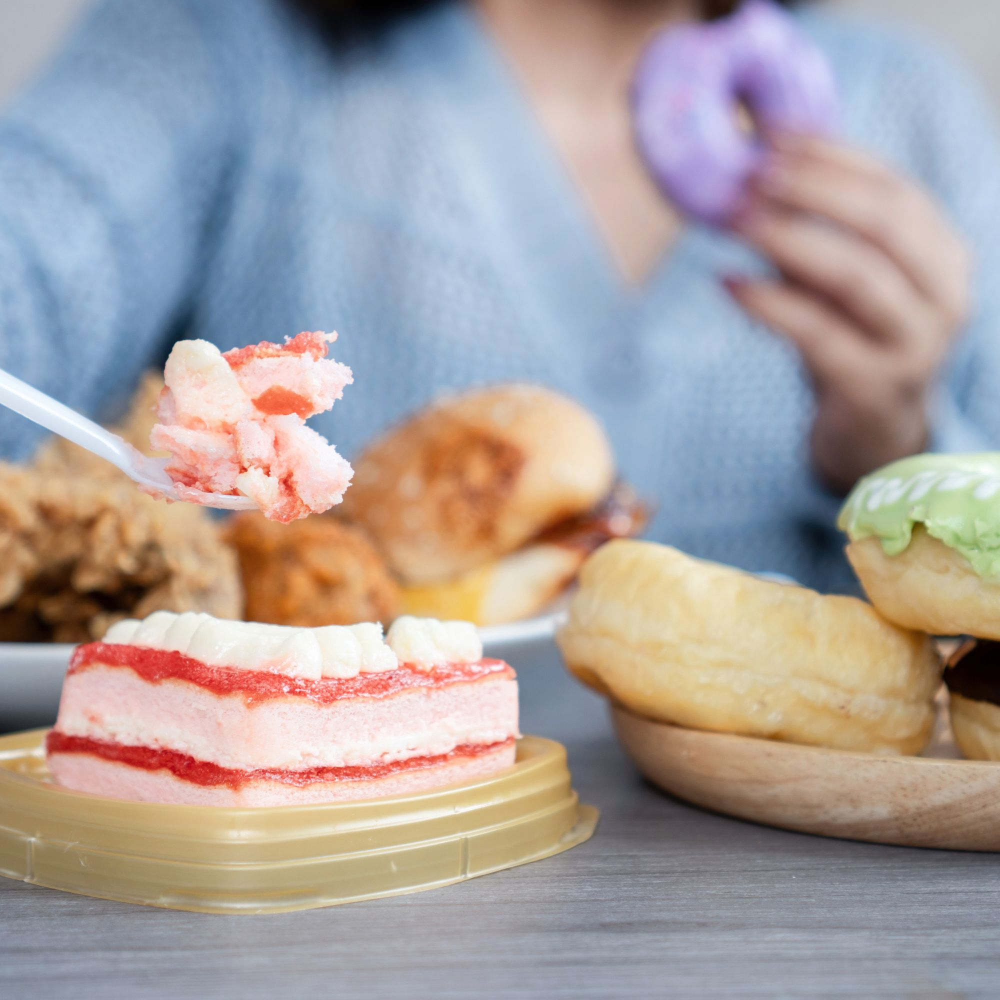
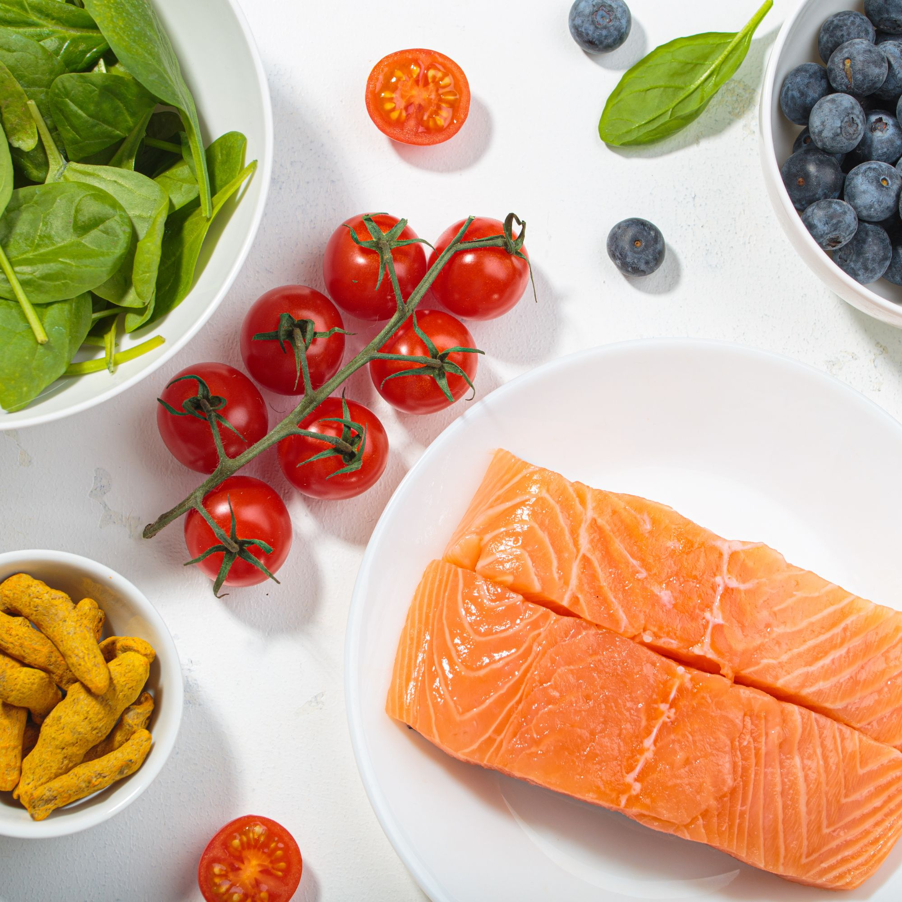
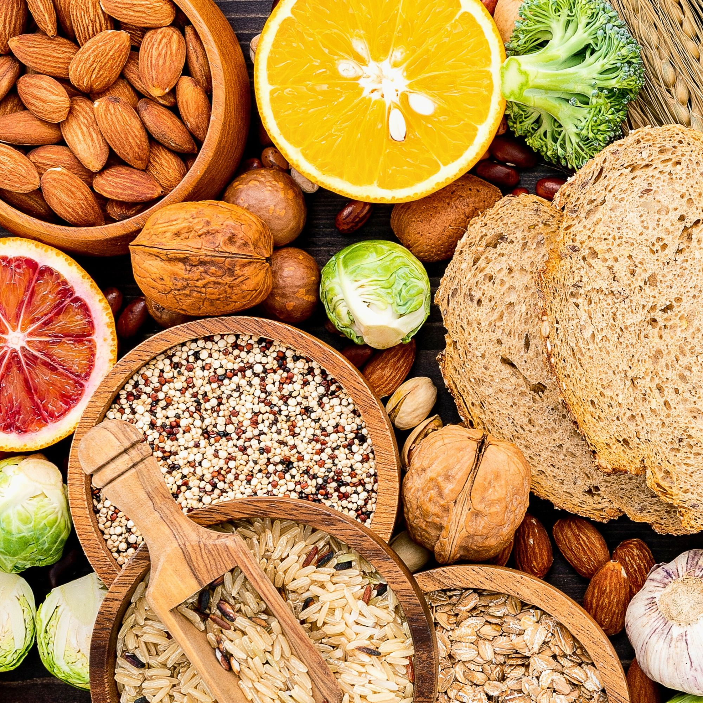

BeautyThe 12 Best Foods for Glowing Skin
Your skincare shelf can't do what your kitchen can. Here are the 12 foods that actually feed your skin from the inside out — and the science behind why they work.
Why Your Skin Is Breaking Out (And How to Fix It From the Inside)
Breakouts aren't random — they're your body communicating. Here's what the science says about the dietary root causes of acne and what to actually do about it.
Collagen: What Actually Boosts It (It's Not Just Supplements)
The supplement industry made billions convincing us to buy collagen powders. But your body already knows how to make it — if you feed it right. Here's the real science.
 Beauty
Beauty
The Gut-Skin Connection: How Your Digestion Shows Up on Your Face
Rosacea, acne, dull skin, eczema — these aren't just skin problems. They're gut problems wearing a skin costume. Here's what the science says and how to heal from within.

NutritionHow to Stop Overeating Without Willpower
Willpower is not the problem. The real drivers of overeating are hormonal, biological, and environmental — and once you understand them, fixing it gets a lot easier.
How to Build a Body You Love Without Obsessing Over It
What if feeling good in your body didn't require tracking every calorie or spending hours in the gym? Here's a different approach — one that actually sticks.

WellnessThe Anti-Inflammatory Lifestyle: What It Actually Looks Like Day to Day
Anti-inflammatory eating isn't a detox or a 30-day challenge. It's a daily practice — and it's more doable (and delicious) than you might think.
 Wellness
Wellness
My Husband Has EoE: What I Wish Someone Had Told Us
When Luke was diagnosed with eosinophilic esophagitis, we were largely on our own. Here's the guide I wish we'd had — the diagnosis, the diet, the emotional weight, and what actually helped.
Eosinophilic Esophagitis Symptoms: What EoE Actually Feels Like
From dysphagia to food impaction, the symptoms of EoE are often dismissed for years. Here's what to look for — and why getting the right diagnosis changes everything.
 EoE
EoE
The EoE Diet: Foods to Eat, Avoid & How to Stay Nourished
A practical guide to eating well with eosinophilic esophagitis — the foods that trigger inflammation, the ones that support healing, and how to keep your nutrition complete.

EoEThe 6-Food Elimination Diet for EoE: A Step-by-Step Guide
The SFED is the gold standard dietary treatment for eosinophilic esophagitis. Here's exactly how to do it, what to expect, and how to reintroduce foods safely with endoscopy confirmation.
EoE Meal Plan: 7 Days of Recipes for Eosinophilic Esophagitis
A complete week of meals free from the top 6 triggers — real food, simple recipes, and practical tips for making the EoE diet sustainable long-term.
 EoE
EoE
EoE in Children: How Parents Can Help a Child With Eosinophilic Esophagitis
Watching your child struggle to eat is one of the hardest things. Here's how to recognise EoE in kids, navigate the elimination diet as a family, and protect your child's growth and wellbeing.
 Nutrition
Nutrition
The Specific Nutrition and Fitness Routines of the Mormon Wives Cast
Ever wondered how the "MomTok" stars from The Secret Lives of Mormon Wives stay so fit with everything going on? Between the drama, the kids, and the camera, their routines are surprisingly real.
 Nutrition
Nutrition
The New System: How I Eat to Stay Slim Without Counting Calories
For years, I tracked everything. Every bite, every snack, every "just a taste." I knew the calories in a medium apple vs. a large one. Then I found a better way — and I've never looked back.
 Lifestyle
Lifestyle
10 Habits That Make You Eat Less (Without Even Trying)
We've all been there — promising ourselves we'll "eat better," only to find ourselves knee-deep in snacks by 8PM. But what if eating less didn't require any willpower at all?
 Beauty
Beauty
You're Not Ugly. You're Just Poor: The Truth About Influencer Beauty
What if I told you the only difference between you and "that girl" you see on your feed isn't genetics — it's access? The brutal truth about influencer beauty, and why it's not your fault.
 Lifestyle
Lifestyle
How Models Really Eat to Stay Slim (Without Going Crazy)
You don't have to starve yourself to look like a model — but you do need to learn how to eat like one. Forget the PR soundbites. Here's what the research and real routines actually reveal.
 Beauty
Beauty
How I Healed My Acne Scars & Boosted Collagen Naturally
My honest journey from scars, stretch marks, and fine lines — to smoother, glowier skin. What I tried, what worked, and the nutrition connection most skincare content completely ignores.
 Lifestyle
Lifestyle
The Skinny System: Nothing Tastes As Good As Discipline Feels
You're not lazy. You're not broken. You're just done with chaos — and ready to feel calm, clear, and in control. Welcome to The Skinny System.
Bethenny Frankel: The Original SkinnyTok Queen
How she eats fries and ice cream — and still stays naturally thin. Have you ever looked at someone and wondered, "How does she eat that and look like that?" Bethenny has the answer.
How To Naturally Eat Less So You Can Lose Weight (SkinnyTok Approved)
It's not about starving yourself. Summer is just a few months away — here's how to feel trim, slim, and confident without feeling deprived, miserable, or like you're on a diet.
My Go-To Spring Makeup Look: Soft, Fresh & Glowy
Spring is finally here, and there's no better time to switch things up with a soft, glowy makeup routine that feels light and effortless. Here's exactly what I'm wearing this season.
Is SkinnyTok Toxic Or Transformative?
What makes people uncomfortable isn't the tips — it's the tone. These creators don't promote starvation or obsession. So why does it feel so controversial? An honest look at both sides.
Get The Smoothest, Silkiest Skin of Your Life
Summer is just around the corner and this is the routine I swear by for the smoothest skin of my life. The full breakdown — products, timing, and the one step most people skip.
Bre Tiesi's Game-Changing Nutrition and Fitness Tips
Bre Tiesi is a 32-year-old reality TV star, realtor, and mom. One thing that stands out? Her wellness approach is surprisingly sustainable. Here's what she actually does — and what you can take from it.
Holly Scarfone's Weight Loss Journey: Losing 20 Pounds in 3 Months
If you're a fan of Netflix reality TV, you might have heard of Holly Scarfone. This beauty became popular after appearing on Too Hot to Handle — and her wellness journey is genuinely worth talking about.
No posts in this category yet — check back soon.